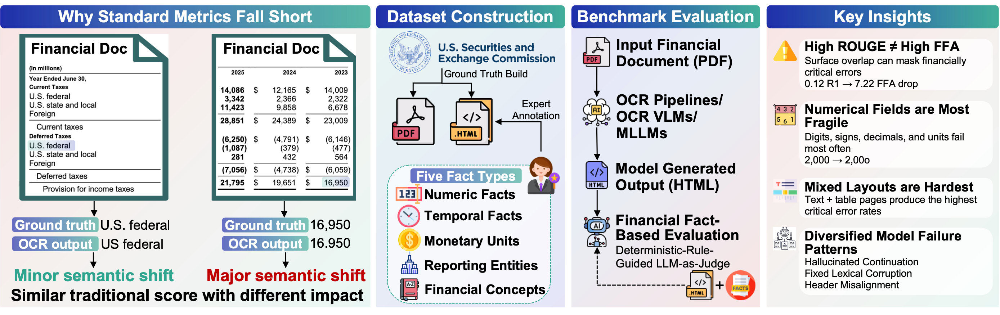
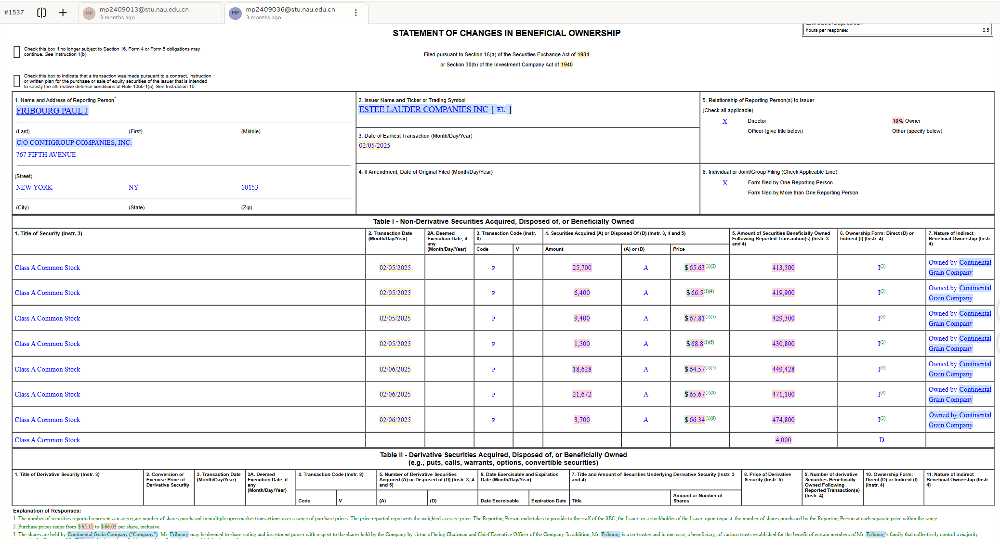
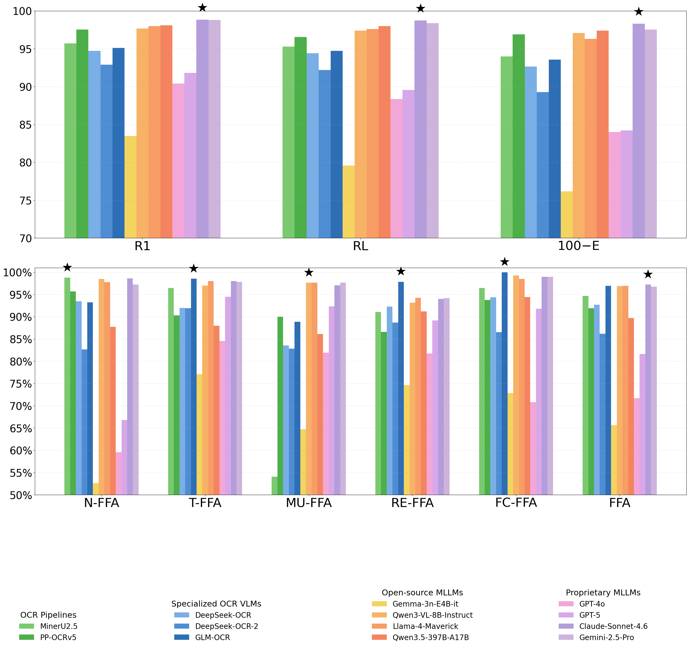
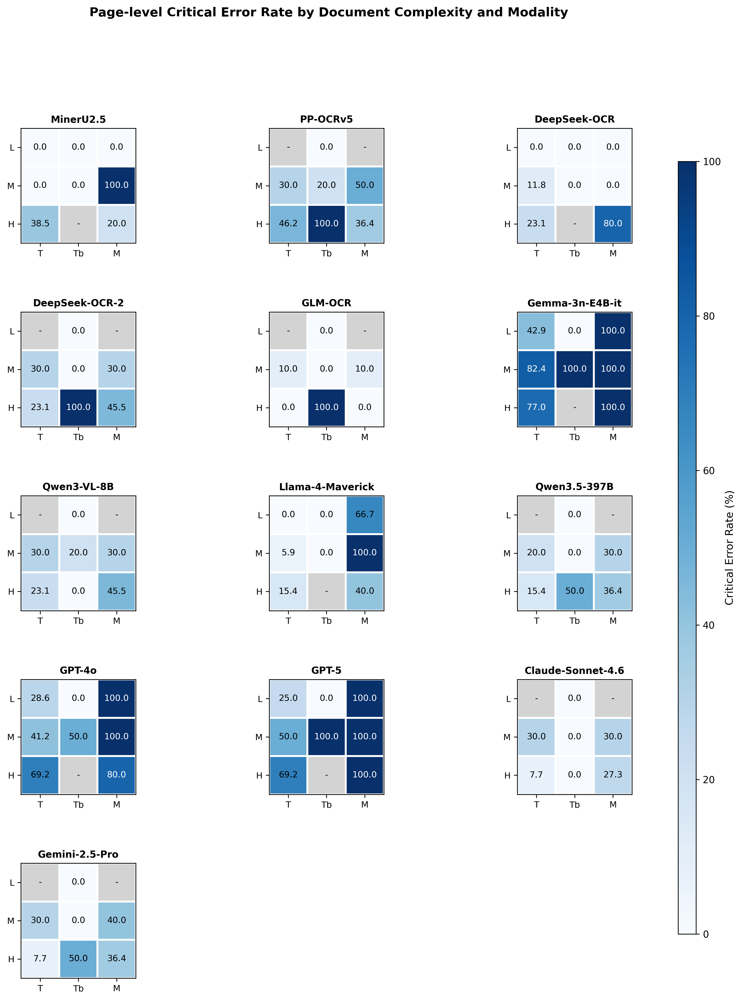
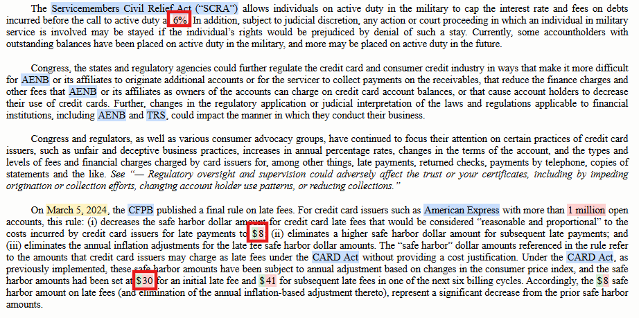
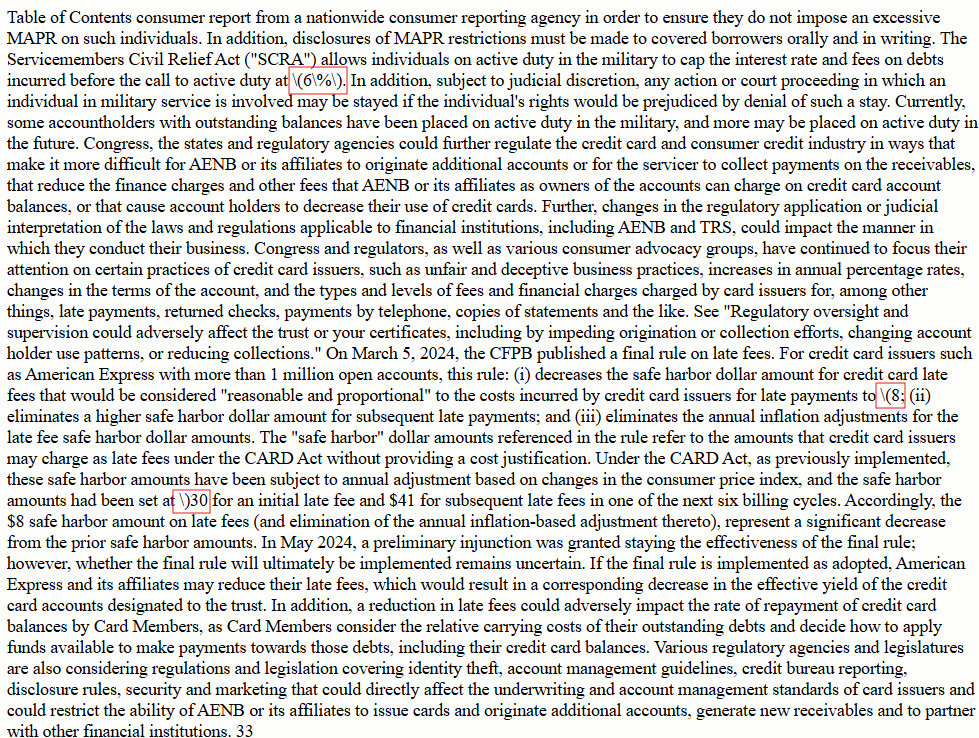

A Visual Benchmark for Financial Fact-Level OCR
1Columbia University, USA 2Stevens Institute of Technology, USA 3The Fin AI, USA 4Georgia Institute of Technology, USA 5New York University, USA 6The University of Tokyo & MBZUAI, Japan & UAE 7MBZUAI, UAE 8University of Minnesota, USA 9Halmstad University, Sweden 10Harvard University, USA 11University of Manchester, UK
*Corresponding author: xueqing.peng2024@gmail.com

Recent progress in multimodal large language models (MLLMs) has substantially improved document understanding, yet strong optical character recognition (OCR) performance on surface metrics does not guarantee faithful preservation of decision-critical evidence. This limitation is especially consequential in financial documents, where small visual errors can induce discrete shifts in meaning. To study this gap, we introduce FinCriticalED (Financial Critical Error Detection), a fact-centric visual benchmark for evaluating whether OCR and vision-language systems preserve financially critical evidence beyond lexical similarity.
FinCriticalED contains 859 real-world financial document pages with 9,481 expert-annotated facts spanning five critical field types: numeric, temporal, monetary unit, reporting entity, and financial concept. We formulate the task as structured OCR with fact-level verification, and develop a Deterministic-Rule-Guided LLM-as-Judge protocol to assess whether model outputs preserve annotated facts in context. We benchmark 13 systems spanning OCR pipelines, specialized OCR VLMs, open-source MLLMs, and proprietary MLLMs.
Results reveal a clear gap between lexical accuracy and factual reliability, with numerical values and monetary units emerging as the most vulnerable fact types, and critical errors concentrating in visually complex, mixed-layout documents with distinct failure patterns across model families. Overall, FinCriticalED provides a rigorous benchmark for trustworthy financial OCR and a practical testbed for evidence fidelity in high-stakes multimodal document understanding.
859
Document pages
9,481
Annotated facts
5
Critical field types
5
Document types
Inter-Annotator Agreement
0.8837
Overall Fleiss' κ
0.82–0.93
Pairwise Cohen's κ range
4
Independent annotators
Annotation Interface (Label Studio)

Annotators used Label Studio to highlight and label financial critical fields directly on rendered ground truth HTMLs.
| Model | Size | General (%) | Fact-Level (%) | |||||||
|---|---|---|---|---|---|---|---|---|---|---|
| R1 | RL | E↓ | N-FFA | T-FFA | M-FFA | R-FFA | FC-FFA | FFA | ||
| OCR Pipelines | ||||||||||
| MinerU2.5 | 1.2B | 95.71 | 95.30 | 6.02 | 98.76 | 96.48 | 54.05 | 91.09 | 96.44 | 94.64 |
| PP-OCRv5 | 0.07B | 97.54 | 96.55 | 3.10 | 95.7 | 90.29 | 90.00 | 86.62 | 93.75 | 91.91 |
| Specialized OCR VLMs | ||||||||||
| DeepSeekOCR | 3B | 94.73 | 94.42 | 7.33 | 93.47 | 91.96 | 83.53 | 92.27 | 94.36 | 92.67 |
| DeepSeekOCR-2 | 6B | 92.90 | 92.18 | 10.72 | 82.63 | 91.9 | 82.83 | 88.69 | 86.51 | 86.19 |
| GLM-OCR | 0.9B | 95.10 | 94.74 | 6.43 | 93.24 | 98.53 | 88.89 | 97.84 | 100.00 | 96.92 |
| Open-source MLLMs | ||||||||||
| Gemma-3n-E4B-it | 4B | 83.49 | 79.59 | 23.82 | 52.65 | 77.06 | 64.71 | 74.65 | 72.86 | 65.68 |
| Qwen3-VL-8B-Instruct | 8B | 97.68 | 97.40 | 2.93 | 98.47 | 96.99 | 97.65 | 93.18 | 99.24 | 96.88 |
| Llama-4-Maverick | 17B | 98.00 | 97.62 | 3.70 | 97.77 | 97.99 | 97.65 | 94.26 | 98.48 | 96.48 |
| Qwen3.5-397B-A17B | 397B | 98.12 | 98.00 | 2.59 | 87.72 | 87.99 | 86.14 | 91.22 | 94.4 | 89.70 |
| Proprietary MLLMs | ||||||||||
| GPT-4o | - | 90.40 | 88.35 | 16.01 | 59.56 | 84.59 | 81.92 | 81.78 | 70.84 | 71.68 |
| GPT-5 | - | 91.81 | 89.56 | 15.79 | 66.83 | 94.48 | 92.35 | 89.19 | 91.77 | 81.65 |
| Claude-Sonnet-4.6 | - | 98.84 | 98.73 | 1.69 | 98.59 | 97.99 | 97.06 | 94.02 | 98.94 | 97.23 |
| Gemini-2.5-Pro | - | 98.81 | 98.37 | 2.46 | 97.24 | 97.82 | 97.65 | 94.18 | 98.94 | 96.74 |
R1 = ROUGE-1, RL = ROUGE-L, E↓ = Edit Distance (lower is better), FFA = Fact-level Financial Accuracy. Best General (%) results in teal. – = results pending.




MinerU2.5: MinerU2.5 fails to capture monetary unit signs and introduces noise around mathematical expressions. Dollar signs and currency symbols preceding financial values are dropped, directly degrading Monetary Unit FFA scores. Additionally, mathematical expressions are surrounded by spurious characters introduced during OCR post-processing.
@misc{he2026fincriticaledvisualbenchmarkfinancial,
title={FinCriticalED: A Visual Benchmark for Financial Fact-Level OCR},
author={Yueru He and Xueqing Peng and Yupeng Cao and Yan Wang and Lingfei Qian and Haohang Li and Yi Han and Shuyao Wang and Ruoyu Xiang and Fan Zhang and Zhuohan Xie and Mingquan Lin and Prayag Tiwari and Jimin Huang and Guojun Xiong and Sophia Ananiadou},
year={2026},
eprint={2511.14998},
archivePrefix={arXiv},
primaryClass={cs.CV},
url={https://arxiv.org/abs/2511.14998},
}
}
The dataset and source code are released under the Apache License 2.0, permitting free use, modification, and distribution in academic, research, and commercial settings. It is the authors' responsibility to ensure that all datasets and source code are licensed such that they can be legally and freely used, at a minimum in academic and research settings.